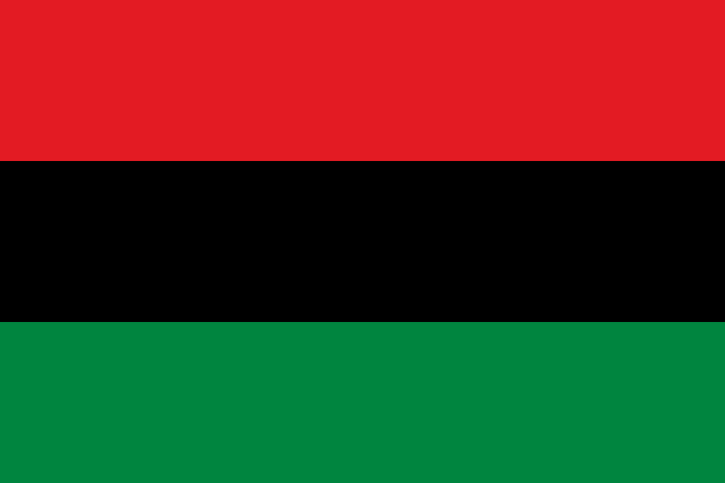
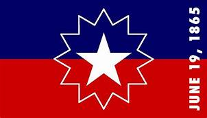

As plantations grew and the need for cheap labor increased, Portuguese businessman began to transport African slaves across the Atlantic ocean. In 1619, 20 African slaves came ashore in the British Colony of Jamestown, Virginia. This is thought to be the beginning of one of the darkest times in American History. As, slavery in the New world grew, laws were enacted that included classifying a black child as a slave, if his/her mother was enslaved.
Slavery outpaces indentured servitude as the most plentiful source of labor in North America. Rice, tobacoo and indigo plantations from Maryland to Georgia prospered as Africa was stripped of it's healthiest men and woman. To ensure control of the enslaved population, the Virgina Slave Code was adopted and even allowed enslavement based on religion. On the contrary, the Pennsylvania Quakers enacted the first anti-slavery resolution in the history of American Slavery.
As the colonies grew, the colonists began to feel oppressed by the English government's desire to control politics, the economy and ideology. This led to the American Revolution, where America gained it's independence(1775-1783). During the war, approximately 5000 Black soldiers fought for America's independence. Yet, when the Constitution of the United States was drafted, Article 1, Section 2 stated that enslaved blacks were counted as three-fifths of a person.
As America celebrated its independence, a fissure began to form between the North and South. The Northern States' economy was much less dependent on slavery and most of the Norther States abolished slavery by 1804. Northern colonist began to comapre slavery to their own subjugation by the British. However, the Southern States nearly exhausted land used for growing tobacco and experienced an ecconomic decline. The creation of the cotton gin revived the Southern States' econonomy and dependence on slave labor.
In 1808, the U.S. prohibited transatlantic slave trade, yet, it continued to flourish. The Southern States had more than half of the countries' enslaved population. It was common for slave masters to own 50 or more slaves. Slaves continued to be denied basic human rights and endured unspeakable horrors. Statutes and penal codes were enacted to heavily restrict slaves' activities.
The abolistionist, led by freed Black people, escaped slaves and sympathetic Whites, movement started growing. The Underground Railroad thrived. American began expanding westward, and more states were admitted to the Union which led to conflict over the status of Black people. Black people were free if the state was a free state. Some states were half free and half enslaved, like Missouri. While others were either free or a slave state. However that ended when the Kansas-Nebraska Act stated that the settlers would decide by vote if a new territory would be a free or slave state. Rebellion continued and in 1857 , the Supreme Court, in Dred Scott v. Sandford , ruled that blacks were not citizens of the United States and denied Congress the ability to prohibit slavery in any federal territory.
In 1860, anti-slavery Republican, Abraham Lincoln, was elected President of the United States of America. Fearing an end to slavery, seven Southern States seceded from the Union to forn the Confederate States of America. This led to a division of the North & South that included strategic military positioning. Initially, the goal was set to preserve the nation. After several battles, that resulted in both the Union and the Confederate armies' suffering mass casualities, and under pressure to end the war before the next election, on September 22, 1862, Abraham Lincoln issued the Preliminary Emanicpation Proclamation, which stated if the rebels did not end the fighting and rejoin the Union by January 1, 1863, all slaves in the rebellious states would be free. January 1, 1863, Abraham Lincoln issued the Emancipation Proclamation. This gave slaves a a reason to escape to the Union, made any slave immediately free upon the Union taking the control of Confederate territory, gave the Union more soldiers in newly freed men and put America at the for front of abolishing slavery.
The Emancipation Proclamation only applied to territories under Confederate control. As, the Union advanced, slaves were freed . However, many slave owners relocated to Texas where slavery persisted due to the lack of Union Army presence. In April of 1865, the confederacy surrendered and the war was over. Two months later, on June 19, 1865, Major General Gordon Granger and his regimen arrived in Galveston, Texas with his regiment and delivered General Order Number 3, the news that the war had ended and that enslaved people were now free. The enslaved people in Texas had no idea that they had been free for two and a half years. On June 19, 1865 marked their day of freedom. On December 6, 1865, all enslaved people in free or slave states were official freed when the Thirteenth Amendment was ratified.
On June 19, 1866, freed men and women in Texas organized the first annual celebration of Jubilee Day. Celebrations included food, song and day. In 1901, Marcus Garvey, the leader of the Universal Negro Improvement Association, introduced the Pan-African Flag . The flag was intended to be a symbol of liberation for the black race. The color red symbolizes blood and blood shed by Africans. Black represents black people. And, green represents growth, fertility and prosperity. The symbolic colors of the Pan-African flag incorporated with a splash of energetic yellow have become the celebratory symbols of Juneteenth, Freedom Day and Jubilee Day. Overtime, many began to celebrate Juneteenth with the colors red, black and green.
Throughout the 20th century, celebrating Juneteenth was consistent but unnoticed as other racial and social issues moved into focus and it was not formerly recognized as a holiday. On June 7, 1979, Texas became the first state to officially recognize Juneteenth as a state holiday. Over the years, many states have adopted the holiday. As of Juneteenth 2021, South Dakota is the only US state that does not have a law to make Juneteenth a state holiday.
The Juneteenth Commemorative Flag  was created in 1997 by Ben Haith, with the help of illustrator Lisa Jeanne Graf. The white star in the center as two meanings. It represents Texas, the Lone Star State, where, in Galveston in 1865, the last remaining slaves were informed of their freedom and the freedom of African Americans in all 50 states. The burst outlining the star is inspired by a nova, a new star, symbolizing a new beginning for African Americans in Galveston and America. The arc extends across the width of the flag representing a new horizon: the promise and new opportunites that await African Americans. The colors of red, white and blue are the same as the American flag and serve as a reminder that slaves and their descendants were and are Americans. In 2000, thee flag was revised to include the actual date, June 19, 1865, that the Galveston slaves were freed.
For years, law makers and citizens have campaigned for Juneteenth to become a federal holiday. In 2016, 89 year old Texas native, Mrs. Opal Lee, began her mission to walk from her home in Fort Worth, Texas to the nation's capital, Washington, D.C. Mrs. Lee's sole goal was to get June 19, recognized as a national holiday. Her mission gained national attention and she is widely recognized as the key to renewed efforts for Juneteenth to be recognized as a federal holiday.
On June 16, 2021, President Joe Biden signed the bill formerly establishing June 19 as Juneteenth National Independence Day in the United States. The law was passed nearly 156 years since enslaved people in Texas received the news of their freedom.
"No one is free until we are all free." - Rev. Dr. Martin Luther King, Jr.